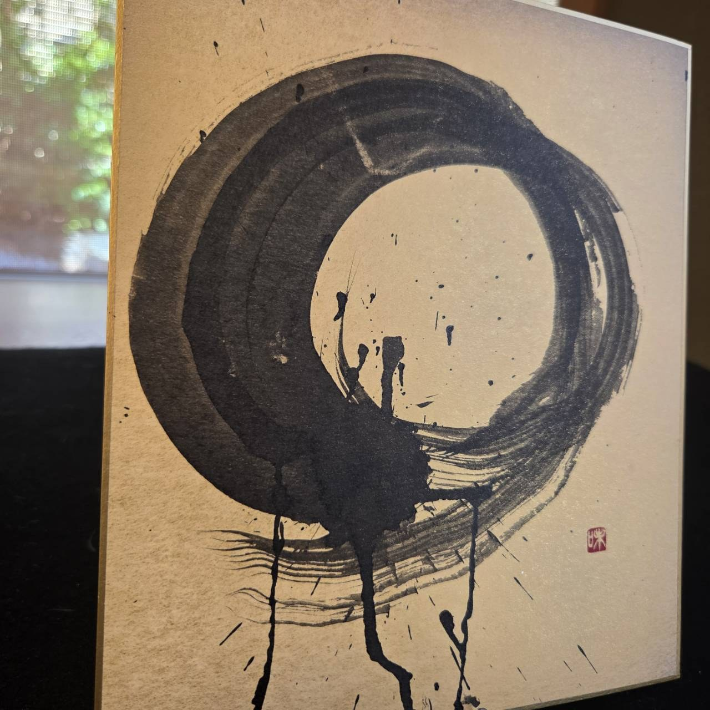
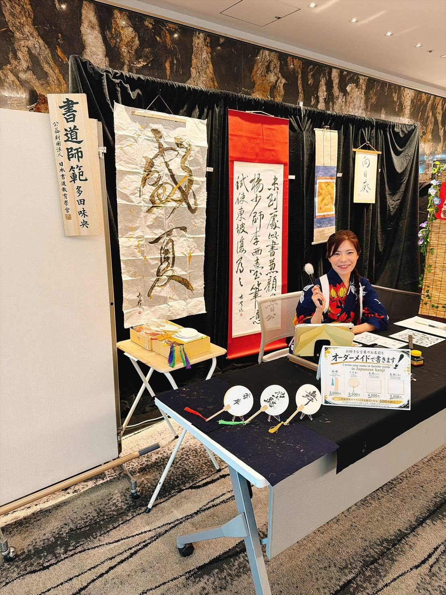

MISSION
To pass on to future generations the spirit of imbuing things with heartfelt intention, rooted in Japanese culture.

01 / SELECTED WORKS
A selection of calligraphy by Mio Tada
Ink, space, and the feeling within each stroke.
02 / THE CALLIGRAPHER
The person behind the brush

JAPANESE CALLIGRAPHER
多田 味央
Mio began practising calligraphy at the age of four and continued until nineteen. At thirty, she returned to the brush and has continued creating ever since.
A qualified calligraphy instructor, her practice includes event exhibitions, outdoor events for international visitors, personalised baby-name calligraphy, and online artwork sales.
03 / PHILOSOPHY
To pass on to future generations the spirit of imbuing things with heartfelt intention, rooted in Japanese culture.
To become a bridge to Japanese culture, bringing wonder and moving people’s hearts.
04 / CONNECT
Artworks, commissions & conversations
For artwork commissions, baby-name calligraphy, event appearances, or lettering for posters and advertising, please send a direct message on Instagram.
Get in touch on Instagram